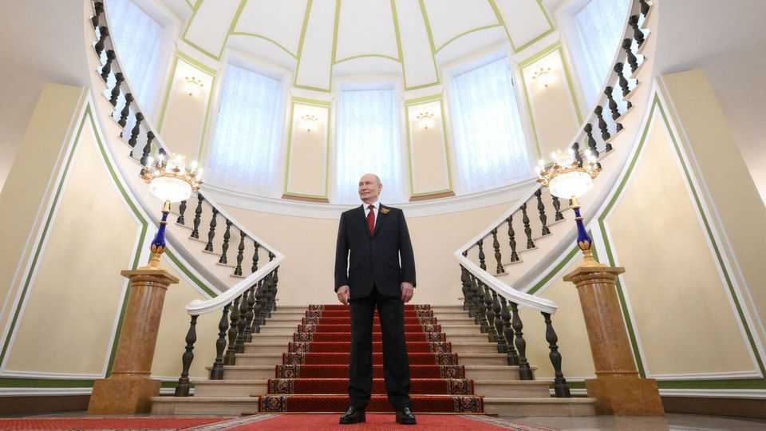

What the largest-ever shareholder judgment reveals about Russia
If you want to see Vladimir Putin’s soul, study the fate of Yukos, an oil company
June 18th 2026

WITH All Russia’s warmongering, repression and corruption, it is easy to forget how the West was once so enamoured of Vladimir Putin. In 2001 George W. Bush declared the then-newish Russian president “trustworthy”, having looked into his eyes and got a “sense of his soul”. The first signs that Mr Putin was nothing of the sort came long before the annexation of Crimea in 2014 and subsequent full-scale invasion of Ukraine. An early indication of his consolidation of power and authoritarian turn was the seizure and dismemberment of Yukos, an oil company.
The Kremlin’s move against the firm and imprisonment of Mikhail Khodorkovsky, its boss, highlighted the power struggle between Mr Putin and his siloviki cronies—former spooks and military men—and the oligarchs who had hoovered up much of the economy in the “voucher” privatisations of the early 1990s. In 2003, after Mr Khodorkovsky—then Russia’s richest man—began funding opposition parties and hinted at a run for the presidency, Yukos was hit with a series of tax-related charges. Mr Khodorkovsky was thrown into a labour camp. The company was broken up and the bits sold to siloviki-linked firms at knock-down prices.
The sometimes nerdy but always fascinating core of “Suing the Kremlin” is the two-decade-long legal saga that the expropriation spawned, which Martin Sixsmith rightly says will be studied by generations of lawyers. He is well placed to tell the tale: a former Moscow correspondent for the BBC, the author has written several other books about Mr Putin’s Russia, including a page-turner on the poisoning in London of a dissident, Alexander Litvinenko, in 2006.
After several fruitless years trying to settle the tax claims, Yukos’s former shareholders fought back. Their unlikely champion was a cheery, phlegmatic London-based tax lawyer, Tim Osborne. Taking on the Kremlin, Mr Osborne might have seemed out of his depth. But he approached the challenge with vim and—given the fate of many past Putin antagonists—courage, winning favourable rulings for the shareholders’ company, GML, at the European Court of Human Rights, the Swiss supreme court and elsewhere.
But GML needed a knockout blow. With help from Shearman & Sterling, an American law firm, Mr Osborne came up with the idea to launch an arbitration case accusing Russia of breaching a cross-border energy-investment treaty by trampling on shareholders’ rights. The result was a stunning win at an international tribunal: an award of $50bn, 20 times the previous record for such a case. After several more legal twists and turns, Russia’s appeals were finally exhausted in October 2025, allowing GML to go after Russian assets to cover the award.
So far, Russia has paid nothing. Little beyond some trademarks for vodka brands has been seized. But as Mr Sixsmith argues convincingly, the victory has been more than pyrrhic. With a clever strategy and hard work, a small group of lawyers and businessmen was able to inflict a high-profile humbling on Mr Putin. The case surely mattered greatly to him. Why else would Russia spend so much on phalanxes of lawyers, including 17 at one hearing? And why would it go to such lengths to intimidate opponents, locking up lawyers, sending death threats through macabre Wikipedia updates and, some speculate, downing a Yukos tax adviser’s helicopter?
The book leaves a number of mysteries unsolved, including why Mr Khodorkovsky—now an anti-Putin campaigner in exile, having been set free in 2013—remained in Russia to be made an example of, when the Kremlin had given warning that it was coming for him and his company. Naivety? Stubbornness? A martyr complex?
But Mr Sixsmith’s well-paced book, readable in a single sitting, shows that Mr Putin’s vindictive, capricious Russia was no place to invest in long before his bloodthirsty adventurism in Ukraine. And that the best way for those he has wronged to get anything resembling justice is to rely on cool heads, clever minds and other countries’ legal systems. ■
For more on the latest books, films, TV shows, albums and controversies, sign up to Plot Twist, our weekly subscriber-only newsletter